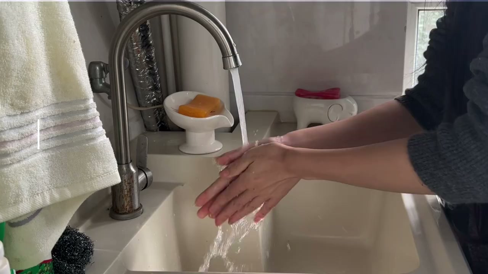
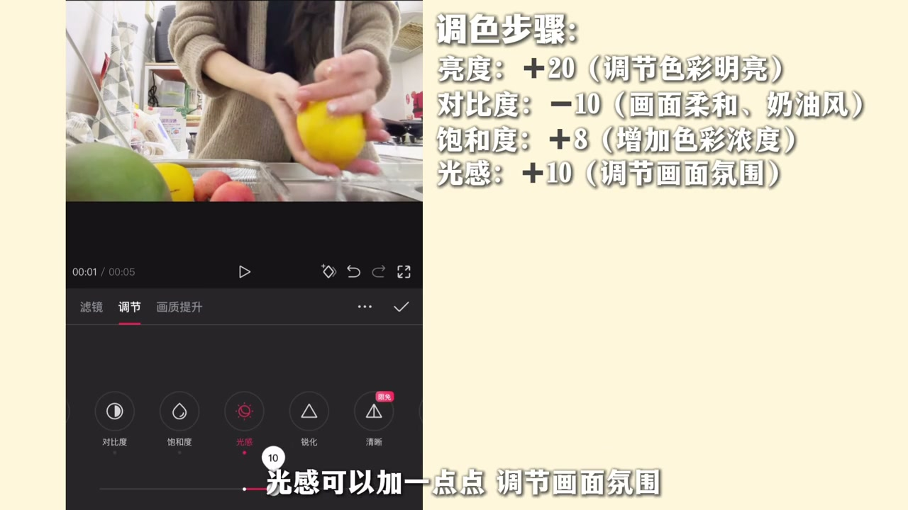

内容要点
这段视频围绕「新手必看🔥如何拯救黑黄视频？看这一篇就够」展开，按时间介绍其中的关键环节。室内光线不足 人物皮肤黄黑怎么办。
设置与操作流程
室内光线不足 人物皮肤黄黑怎么办。如何让昏暗视频变得清晰明亮有质感。别着急 本钟教会你。我们先来了解一下调色里各个参数的作用。大家可以截图保存。以这个画面为例整体环境是偏黑偏暗的。我们可以先增加亮度提亮整体画面。再降低对比度让画面更具奶油风。接着增加饱和度使色彩更鲜明。光感可以加一点点调节画面氛围

核心操作步骤
然后找到HSL调节画面中单个的色彩参数。先找到橙色降低色调和饱和度。然后再适当增加亮度。这不是为了给人物皮黄变成冷白皮。接着根据画面中果书的颜色。逐一调节对应的色彩参数。这一步可以让色彩更加鲜明。果书更具生命力。然后再适当调节一下高光和阴影部分。使画面更加立体美观

总结
然后找到HSL调节画面中单个的色彩参数。